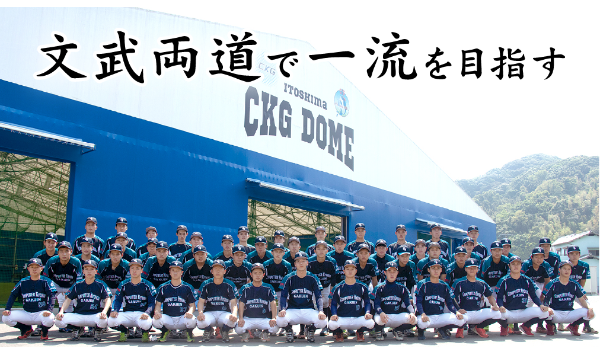

学業と野球の両立で一流のビジネスマンを育成します。
「高校卒業後も本格的な舞台で大好きな野球を続けたい！」そんなスポーツマンが集う場所が、
CKGの「アスリートコース」です。専門学校ながら日本野球連盟に属し平成22年には全国の専門学校で初めて
JABA大会優勝、平成２３年にはプロ野球選手も輩出しています。特徴としては、何よりも独自のカリキュラム。
午前の授業でコンピュータやビジネスの知識と技能を学び、午後は野球に没頭出来る構成で、「一流のスポーツマン、一流のビジネスマンへ」をテーマに、
野球だけでなく、就職に役立つ社会人力も授けます。そのため、過去10年以上アスリートコースの就職率は0％を記録、まさに文武両道のコースなのです。
❤️ 将来目指す職業
・実業団野球選手
・プロ野球選手
・AIトレーナー
・RPAエンジニア
・セールスエンジニア
・システムオペレーター
・データサイエンティスト
❤️ 取得可能な資格
・情報検定（Ｊ検）
・MOS(Excel、Word)
・ビジネス能力検定(B検)
・ITパスポート